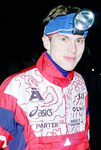

 Mens Sana in Corpore Sano
"A sound mind in a sound body" (D. Iunius Iuvenalis). That's been my driving force since the cradle, whether I knew it or not. The quiet moments lying around are nice, too, but being in one place too long just makes me crazy.So I do sports. I run, play, ski, drive a bike or take a long hike every now and then, about every day, that is. I'd love to say that I'm excercising just for the fun of it, but I have to admit that there lies other reasons, too. It's nice to be good. It would be great to be even better.
Orienteering
One of the oldest sports in the world, orienteering, is also one of the least known. It has it's roots in the Nordic countries as an army sport. Nowadays it's one of the more popular sports in Finland as well as in other Nordic countries. They also tend to dominate the world elite orienteering with Switzerland, Russia and a few other countries. In the World Orienteering Championships 2001 in my current hometown Tampere Finland was the most successful nation with three golden and a total of eight medals.Orienteering has been my sports number one since 14 years old. Two years later I went to a sports high school in Turku far far (25 km) away from home.
I've been quite successful in orienteering, mostly in junior classes. My best merits are Finnish championship in relay in M20-class and 7th place in the Jukola relay in 2001.
Other sports
While orienteering has become my most important hobby (and beyond), it has by no means been the only nor the first sports I've made during my short life. When younger I played a lot of football and ice hockey, as well as tennis and volleyball with my father. I was also interested in athletics, with most success in middle and long distances.
Life's too short to mention here all the sports I've come across but believe me when I say there's plenty of them. And still I haven't found sports that I wouldn't like. Sadly I often have to admit that there's no time to do them all but, heck, you got to make choices. Yet I haven't been able to do mine, god knows if I ever will...